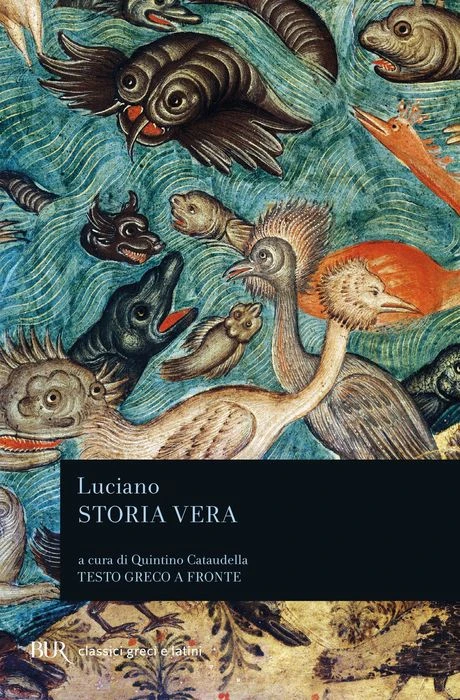
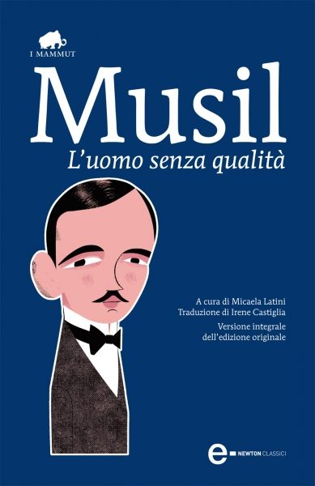
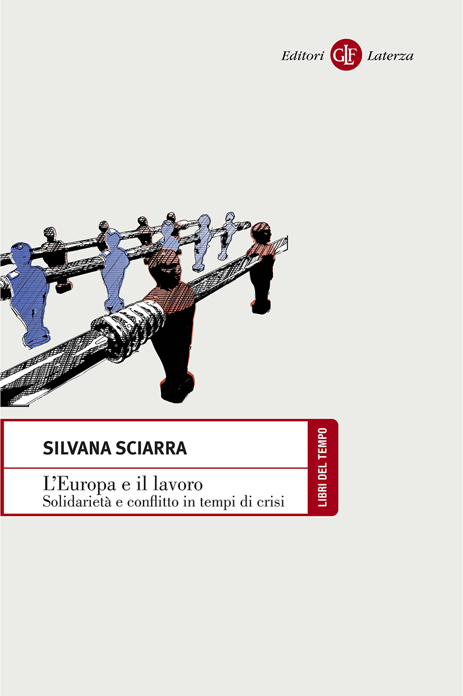
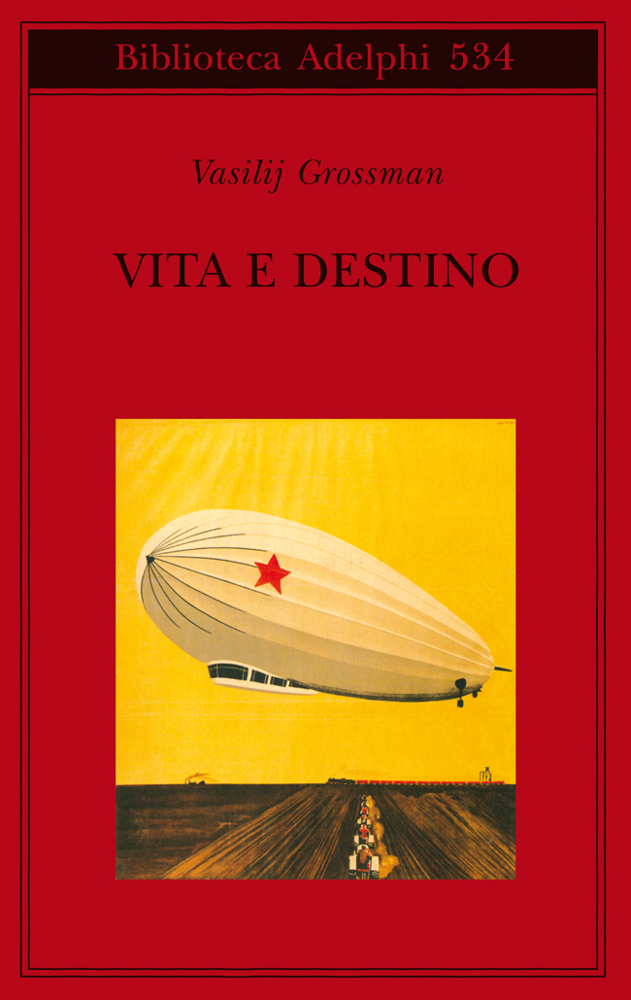
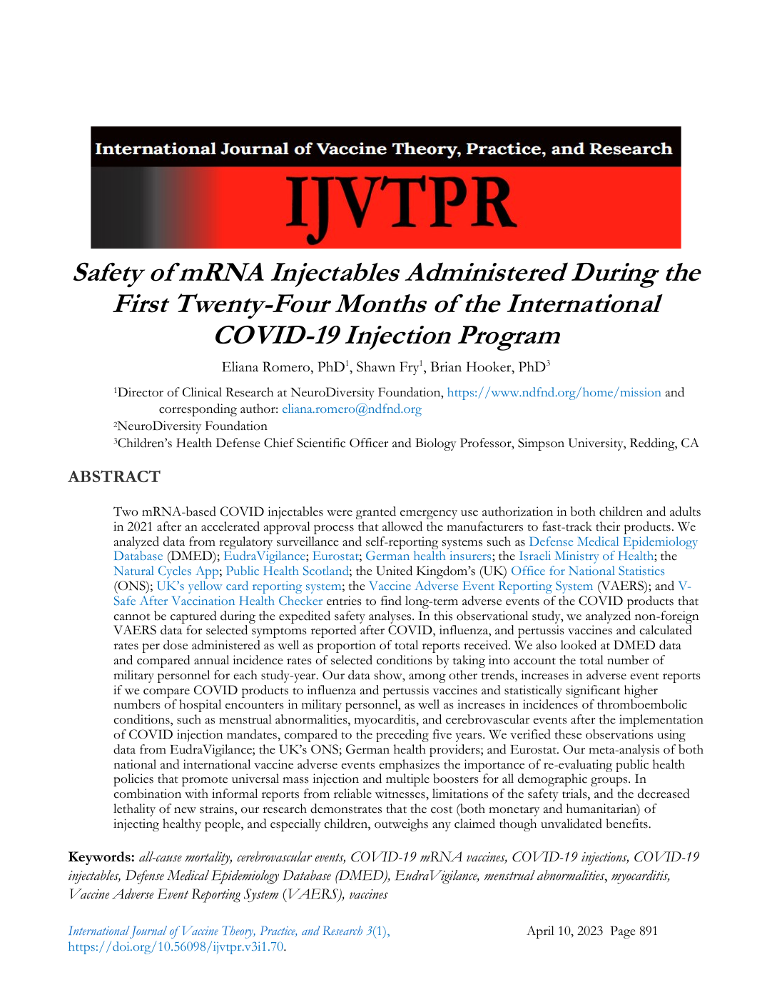
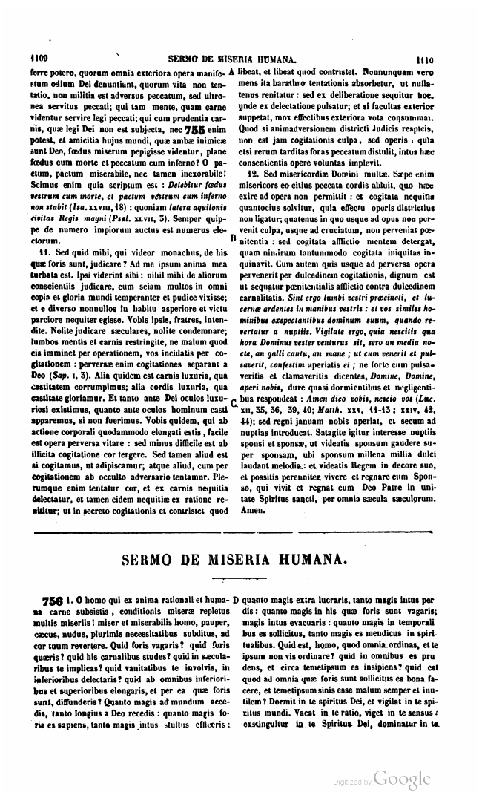

1:06:02 · 13 OPERE
L'autonomia dell'individuo in tempi di narrative collettive.
Il filo del discorso
L’autonomia dell’individuo è il filo di un percorso che unisce istruzione, storia, libertà di parola e rapporto con le istituzioni. Il relatore prende avvio da una domanda di Maddalena Loy a Silvana Sciarra durante la conferenza stampa della Corte costituzionale del 13 aprile 2023. Avrebbe voluto parlare di Kant, ma considera il presente troppo lontano dall’indipendenza del giudizio. Questa premessa sostiene una critica dell’industria culturale, già sviluppata nei propri libri La società del contrario e The Empty Campus. Le invettive contro persone e istituzioni restano opinioni attribuite, senza diventare diagnosi o accertamenti professionali. La prima parte riguarda il modo di raccontare il passato. Un episodio di cavalleria del 1914, che il relatore ricorda da un libro non identificato, diventa esempio della distanza tra manuali e altre letture. La difficoltà di trovarlo in rete non prova una cancellazione intenzionale. Luciano e Storia vera introducono la satira della pretesa di verità; Socrate, la libertà di parola; Paolo De Benedetti, la possibilità di un senso personale che non coincida con una verità privata. Musil e Zweig sono consigliati per cogliere un clima storico, mantenendo distinti romanzo, memoria e ricostruzione storiografica. Le generalizzazioni sulle sconfitte austriache e sulle istituzioni asburgiche richiedono correzioni cronologiche. La propaganda di guerra, Bernays e una critica alla controinformazione portano poi al tema delle narrative collettive. Il relatore rifiuta alcune teorie cospirative, ma ipotizza anche che discorso e controdiscorso siano predisposti per controllare il pubblico: questa regia resta una congettura. Le immagini della caccia alla volpe e delle pulci chiuse in un recipiente rappresentano alternative bloccate e abitudini alla subordinazione; non sono prove storiche o esperimenti psicologici accertati. La sua proposta consiste nel recuperare analisi, fonti e contraddittorio, oltre le opposizioni in bianco e nero. Il ritorno alla Corte costituzionale mette al centro la tensione tra tutela della salute, solidarietà e diritti individuali. La scheda distingue la polemica del relatore dal contenuto delle fonti giuridiche: la Costituzione prevede sia diritti della persona sia doveri e interesse collettivo, con limiti, garanzie e criteri di bilanciamento. Un riferimento a un paper sui primi due anni di vaccinazioni è identificabile probabilmente in Romero, Fry e Hooker. Il rapporto numerico richiamato riguarda segnalazioni spontanee per dose: non dimostra, da solo, mortalità causale o un rischio individuale moltiplicato per 45. Vita e destino di Grossman offre infine un’immagine letteraria della persona negata dai grandi insiemi del nazismo. Il relatore ne trae una critica del presente; il valore del romanzo e la storia della sua censura non bastano a stabilire un’equivalenza giuridica o storica con ogni misura contemporanea. Un richiamo al Sermo de miseria humana, riscontrabile nella tradizione pseudo-bernardina, e al Salmo 42 chiude la domanda su come un individuo possa riconoscersi libero e assumere responsabilmente il proprio giudizio.
I libri nel discorso

La società del contrario
Copertina: Zambon · 2005
Copertina autentica dell’edizione di riferimento, controllata visivamente. Non identifica l’esemplare letto o citato nel video.
La società del contrario, proprio libro del 2005, nominato nel discorso sull’industria culturale.
Passaggio 1:54 ↗ · Fonti e libro ↗
The Empty Campus
Copertina: Lulu · edizione inglese di riferimento
Immagine associata all’ISBN di riferimento e controllata visivamente; edizione e traduzione non identificate come quelle citate o lette nel video.
The Empty Campus è nominato in inglese insieme all’altro libro dell’autore.
Passaggio 2:01 ↗ · Fonti e libro ↗
Storia vera (Una storia vera / Verae historiae)
Copertina di un’edizione italiana dell’opera: BUR, a cura di Quintino Cataudella, testo greco a fronte; ISBN 9788817167512, edizione a catalogo dal 1990
Copertina attuale associata dall’editore all’ISBN 9788817167512. Il video non identifica questa edizione; la data di ingresso in catalogo non certifica che la grafica attuale fosse identica nel 1990.
Luciano e Storia vera espliciti, satira delle storie verissime e viaggio sulla Luna. Opera distinta dai Dialoghi dei morti.
Passaggio 12:18 ↗ · Fonti e libro ↗
Ciò che tarda avverrà
Identificazione probabile
Copertina: Qiqajon, Magnano, 1992, Spiritualità ebraica, 144 pagine; il capitolo iniziale è dedicato al settantunesimo senso.
Immagine autentica Qiqajon del titolo identificato come probabile. Il riferimento non è sostituito con il diverso numero di Humanitas del 2006 intitolato Il settantunesimo senso. La presenza del concetto in più scritti non consente di certificare che il relatore stesse citando questa specifica edizione.
Paolo De Benedetti, un piccolo libro e settantunesimo senso. Titolo non pronunciato: identificazione probabile con il capitolo iniziale di Ciò che tarda avverrà, riscontrato nella laudatio originale; non l’omaggio collettivo Humanitas.
Passaggio 17:35 ↗ · Fonti e libro ↗
L’uomo senza qualità
Copertina: Newton Compton · eBook di riferimento
L’uomo senza qualità e Musil nominati come lettura per il clima della dissoluzione austro-ungarica.
Passaggio 23:25 ↗ · Fonti e libro ↗
Il mondo di ieri. Ricordi di un europeo
Copertina: Newton Compton, edizione integrale, cura e traduzione di Silvia Montis,352 pagine; ISBN indicato nel catalogo 9788854148819.
Copertina autentica della scheda Newton Compton, con fascetta promozionale riferita al film Grand Budapest Hotel. La fascetta è parte dell’immagine editoriale, non un’opera aggiunta al repertorio. Nessuna tiratura specifica è attribuita al video.
Il mondo di ieri / Die Welt von Gestern e Stefan Zweig espliciti; memoria autobiografica distinta da un manuale storiografico.
Passaggio 23:36 ↗ · Fonti e libro ↗
Propaganda
Copertina: Apogeo · Saggi, marzo 2026 · traduzione e redazione Aldo Ballerini
Copertina autentica dell’edizione Apogeo del marzo 2026, successiva alla registrazione del video: è un riferimento bibliografico attuale, non l’esemplare citato nel filmato. Titolo originale dell’opera Propaganda, 1928.
Edward Bernays e titolo Propaganda pronunciati chiaramente.
Passaggio 31:35 ↗ · Fonti e libro ↗
L’Europa e il lavoro. Solidarietà e conflitto in tempi di crisi
Copertina dell’edizione citata bibliograficamente: Laterza, Libri del Tempo 468, 2013, ISBN 9788858105504
Il video menziona editore e anno 2013, corrispondenti alla scheda. Non è certificata la tiratura o l’identità visiva della copia del relatore. Il campo data di pubblicazione generato dal sito riporta la data corrente della pagina: per la pubblicazione si usa il dato esplicito Edizione 2013, confermato dal registro pubblico.
Silvana Sciarra e L’Europa e il lavoro. Solidarietà e conflitto in tempi di crisi, Laterza 2013: citazione esplicita. I giudizi sul libro non sono certificati come valutazione del suo contenuto.
Passaggio 52:05 ↗ · Fonti e libro ↗
Vita e destino
Copertina dell’edizione citata bibliograficamente: Adelphi, Biblioteca Adelphi 534, 2008, traduzione Claudia Zonghetti, ISBN 9788845923401
Il video indica Adelphi 2008; l’immagine proviene dalla scheda di quella edizione, oggi descritta con successive ristampe. Non è attestata la specifica ristampa posseduta dal relatore. Illustrazione di Aleksandr Deineka dichiarata dall’editore.
Grossman e Vita e destino espliciti, edizione Adelphi 2008 dichiarata e passo letto sul nazismo e la persona. Catalogo editore riscontrato.
Passaggio 52:35 ↗ · Fonti e libro ↗
Costituzione della Repubblica Italiana
Copertina dell’edizione Intra aggiornata al 2023: Intra · 2023 · introduzione di Umberto Vincenti
Copertina autentica del testo integrale, aggiornata alla legge costituzionale 26 settembre 2023 n.1. È successiva al filmato del 2019 e non rappresenta la versione storica letta dal relatore. Umberto Vincenti firma l’introduzione.
Costituzione italiana esplicita, discussione sul rapporto tra scienza, solidarietà e salute; articolo 1 sulla sovranità ripreso a 3691. Contesto giuridico distinto dall’interpretazione polemica del relatore.
Passaggio 52:47 ↗ · Fonti e libro ↗
Safety of mRNA Injectables Administered During the First Twenty-Four Months of the International COVID-19 Injection Program
Identificazione probabile
Frontespizio originale dell’articolo: IJVTPR 3(1), aprile 2023, pp. 891–910, DOI 10.56098/ijvtpr.v3i1.70
Frontespizio dichiarato dell’articolo, render fedele della prima pagina originale senza interventi sul contenuto. Il titolo nel PDF differisce lessicalmente dai metadati correnti; DOI unico verificato. La sua presenza nel repertorio non convalida le inferenze causali dell’articolo.
Rivista IJVTPR e confronto 45 volte, due anni rispetto ai vaccini influenzali dal 1990. Titolo/autori non pronunciati: identificazione probabile con il risultato VAERS di Romero, Fry, Hooker 2023, DOI univoco. Il risultato riguarda segnalazioni per dose, non mortalità causale.
Passaggio 57:11 ↗ · Fonti e libro ↗
Sermo de miseria humana
Facsimile della pagina iniziale del sermone nella PL184 del 1859: nella parte superiore termina il testo precedente; non copertina autonoma o manoscritto.: Facsimile della pagina iniziale di Sermo de miseria humana, Patrologia Latina 184, edizione J.-P. Migne, Parigi 1859, coll. 1109–1110 (pagina PDF 555). Il sermone inizia nella parte inferiore con il titolo e Homo qui ex anima rationali et humana carne subsistis; la parte superiore conserva la chiusa del testo precedente. Pagina completa autentica, non copertina autonoma o manoscritto; l’attribuzione tradizionale a Bernardo non è una paternità certa.
Edizione illustrativa riscontrata mediante titolo, incipit e collocazione del sermone; il video non identifica la sua edizione. L’originale medievale e la stampa ottocentesca non sono confusi. La pagina contiene anche il termine del sermone precedente, dichiarato nella didascalia.
Nel passaggio: 59 s: dopo il richiamo alla miseria umana il relatore nomina Bernardo di Chiaravalle e Sermo de miseria humana. Nomi e latino sono deformati dalla trascrizione automatica; il titolo risulta dal riscontro bibliografico primario. L’attribuzione tradizionale non è trasformata in paternità certa.
Passaggio 1:04:02 ↗ · Fonti e libro ↗
Bibbia
Copertina: San Paolo, 2014 · Nuova Versione dai Testi Antichi · edizione di riferimento
Salmo 42, un abisso chiama un altro abisso: richiamo esplicito 42:8 nella numerazione ebraica, 41:8 greco-latina.
Passaggio 1:05:45 ↗ · Fonti e libro ↗